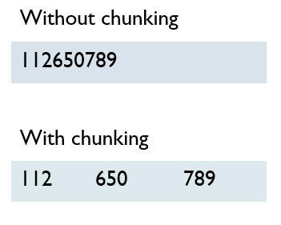

The Human as an Information Processor
Perceptual, cognitive and motor systems; vision, hearing and touch in UI design; sensory memory, STM (Miller's 7 ± 2, chunking) and LTM; cognitive load; attention; motor skills.
▶Lecture videos
Click any timestamp — here or inside the notes — to jump the video to that moment. Your position is remembered.
Human as an Information Processing Machine
The human as input–processing–output, senses, memory and cognitive limits.
00:01Humans: the core component of HCI01:39Designing interfaces humans can understand02:33The human as an information processor: input and output03:18Input channels: vision, hearing, touch06:22Sensory memory → short-term → long-term memory07:55Analysing sensory signals08:51Recognition: matching against long-term memory (familiar faces)10:30Processing and responding1The human as an information processing machine
மனிதர் தகவலைச் செயலாக்குவது
கண் அல்லது காது தகவலைப் பெறும்; நினைவும் சிந்தனையும் அதைப் புரிந்து முடிவு எடுக்கும்; உடல் செயலைச் செய்யும். இந்த எல்லைகளைக் கணக்கில் கொள்ளாமல் மிக அதிகத் தகவலைக் காட்டினால் பயனர் குழம்பலாம்.
மேலும் புரிந்துகொள்ள · தேர்வுக் குறிப்புகள்
Perceptual system signal உணரும்; cognitive system பொருள் புரிந்து முடிவு எடுக்கும்; motor system செயலை நிறைவேற்றும். Delay எந்தப் பகுதியில் வருகிறது என்பதைப் பார்த்தால் design மாற்றம் தெளிவாகும். Button சிறிதாக இருப்பது motor பிரச்சினை; instruction புரியாதது cognitive பிரச்சினை; low contrast perceptual பிரச்சினை. ஒரே “slow user” என்ற label போதாது.
பாடத்தின் மீதிப் புள்ளிகளும் உதாரணமும்
Design diagnosis: Alert தெரியவில்லை என்றால் perceptual; alert text புரியவில்லை என்றால் cognitive; சரியான button-ஐத் தொட முடியவில்லை என்றால் motor பிரச்சினை. Input→processing→output என்பது புரிதலுக்கான model; எல்லா உடல் reflex-உம் முதலில் விழிப்புணர்வான சிந்தனையைக் காத்திருக்கும் என்று பொருள் அல்ல.
HCI models the user as being like a computer, with three sub-systems:
- Perceptual system (INPUT)
- Cognitive system (PROCESSING)
- Motor system (OUTPUT)

| Sub-system | Role | Computer analogy |
|---|---|---|
| Perceptual | Receives stimuli through the senses (eyes, ears, skin) and buffers them in sensory stores | Input devices + buffer |
| Cognitive | Processes, recognises, reasons, comparing signals with experience from long-term memory | CPU + RAM + disk |
| Motor | Turns decisions into muscle actions: clicking, typing, speech, head movement, steering | Output devices |
- Input (perceptual): heat receptors in the fingertips detect intense heat.
- Processing: a rapid protective reflex can initiate withdrawal before conscious interpretation; the information-processing sequence is a simplified teaching model.
- Output (motor): arm muscles contract instantly and the hand jerks away.
- Later evaluation: the person recognises what happened and decides what to do next. This example illustrates model components, not medical treatment advice.

HCI பயனரை கணினியைப் போன்றவராக, மூன்று துணை முறைமைகளுடன் மாதிரியாக்குகிறது:
- புலனுணர்வு முறைமை (உள்ளீடு)
- அறிவாற்றல் முறைமை (செயலாக்கம்)
- இயக்க முறைமை (வெளியீடு)
| துணை முறைமை | பங்கு | கணினியுடனான ஒப்புமை |
|---|---|---|
| புலனுணர்வு | புலன்கள் (கண்கள், காதுகள், தோல்) மூலம் தூண்டுதல்களைப் பெற்று புலன்சார் சேமிப்பகங்களில் தற்காலிகமாக வைக்கிறது | உள்ளீட்டுச் சாதனங்கள் + இடையகச் சேமிப்பு |
| அறிவாற்றல் | நீண்டகால நினைவிலுள்ள அனுபவங்களுடன் சமிக்ஞைகளை ஒப்பிட்டு செயலாக்குதல், அடையாளம் காணுதல், பகுத்தறிதல் | CPU + RAM + வட்டு |
| இயக்கம் | முடிவுகளை தசைச் செயல்களாக மாற்றுகிறது: சொடுக்குதல், தட்டச்சு, பேச்சு, தலை அசைவு, வாகனத்தைத் திருப்புதல் | வெளியீட்டுச் சாதனங்கள் |
- உள்ளீடு (புலனுணர்வு): விரல் நுனிகளிலுள்ள வெப்ப ஏற்பிகள் கடுமையான வெப்பத்தைக் கண்டறிகின்றன.
- செயலாக்கம்: உணர்வுபூர்வமாகப் பொருள் கொடுப்பதற்கு முன்னரே விரைவான பாதுகாப்பு அனிச்சை கையை விலக்கத் தொடங்கலாம்; தகவல் செயலாக்க வரிசை எளிமைப்படுத்தப்பட்ட கற்பித்தல் மாதிரியாகும்.
- வெளியீடு (இயக்கம்): கையின் தசைகள் உடனடியாகச் சுருங்கி கை வேகமாக விலகுகிறது.
- பின்னர் மதிப்பீடு: என்ன நடந்தது என்பதை நபர் உணர்ந்து அடுத்து என்ன செய்வதென்று முடிவு செய்கிறார். இந்த எடுத்துக்காட்டு மாதிரியின் கூறுகளை விளக்குகிறது; மருத்துவச் சிகிச்சை ஆலோசனை அல்ல.
2The senses in UI design
உணர்வுகளுக்கு ஏற்ற UI
பார்வை, கேள்வி, தொடுதல் வழியாக signal கொடுக்கலாம். நிறத்தை மட்டும் நம்பினால் colour-blind பயனர் தவறவிடலாம். Error-க்கு நிறத்துடன் icon மற்றும் விளக்கமும் கொடுப்பது சிறந்தது.
மேலும் புரிந்துகொள்ள · தேர்வுக் குறிப்புகள்
பாடத்தின் மீதிப் புள்ளிகளும் உதாரணமும்
பார்வை: நடுப்பார்வையில் நுணுக்கம் தெளிவு; peripheral vision அசைவைக் கவனிக்க உதவும். முக்கிய தகவலுக்கு தெளிவான hierarchy, contrast, வாசிக்கக்கூடிய எழுத்து தேவை; எல்லா screen-களிலும் ஒரே மூலையில்தான் alert இருக்கவேண்டும் என்ற கட்டாயமில்லை.
கேள்வி: திரையைப் பார்க்காதபோதும் alert கவனிக்கலாம்; pitch/volume/timbre வேறுபடுத்தலாம். ஆனால் அதிக ஒலி பயனரையும் அருகிலுள்ளவரையும் தொந்தரவு செய்யும். தொடு: vibration/keyboard feel போன்ற தனிப்பட்ட feedback; தொடு உணர்வு எல்லோருக்கும் ஒரேபடி இருக்காது. Colour மட்டும் அல்லது sound மட்டும் நம்பாமல் மாற்று cues கொடுக்கவும்.
| 👀 Vision | 👂 Hearing | ✋ Touch (haptic) | |
|---|---|---|---|
| Nature | Directional: sharp foveal focus in the centre; peripheral vision detects movement and broad shapes | Non-directional (omni-directional): heard wherever the head is turned. Varies by pitch, timbre, volume | Needs direct physical contact: pressure, resistance, temperature, vibration |
| UI use | Critical content in the centre, secondary tools at the margins. The top-right corner is a known spot for alerts and profile toggles | Audio icons and chimes are great for urgent alerts | Personal and private: keyboard click-feel, phone vibration, VR haptic controllers |
| Caution | 1 in 12 men and 1 in 200 women are colour-blind. Never rely on colour alone for status | Overuse overwhelms users and disturbs bystanders | — |
| 👀 பார்வை | 👂 கேள்வி | ✋ தொடு உணர்வு | |
|---|---|---|---|
| இயல்பு | திசை சார்ந்தது: மையத்தில் கூர்மையான விழிக்குழி கவனம்; புறப்பார்வை இயக்கத்தையும் பெரிய வடிவங்களையும் கண்டறிகிறது | திசை சாராதது (அனைத்துத் திசைகளும்): தலை எந்தப் பக்கம் திரும்பியிருந்தாலும் கேட்கிறது. சுருதி, ஒலிநயம், ஒலியளவு ஆகியவற்றால் மாறுபடுகிறது | நேரடி உடல் தொடர்பு தேவை: அழுத்தம், எதிர்ப்பு, வெப்பநிலை, அதிர்வு |
| UI பயன்பாடு | முக்கிய உள்ளடக்கம் மையத்தில், துணைக் கருவிகள் ஓரங்களில். மேல் வலது மூலை எச்சரிக்கைகள் மற்றும் சுயவிவர மாற்றிகளுக்கான பரிச்சயமான இடம் | ஒலிச் சின்னங்களும் மணியொலிகளும் அவசர எச்சரிக்கைகளுக்கு மிகவும் ஏற்றவை | தனிப்பட்டதும் அந்தரங்கமானதும்: விசைப்பலகை அழுத்தத்தின் உணர்வு, தொலைபேசி அதிர்வு, VR தொடுபின்னூட்டக் கட்டுப்படுத்திகள் |
| கவனம் | 12 ஆண்களில் ஒருவரும் 200 பெண்களில் ஒருவரும் நிறக்குருடர்கள். நிலையைத் தெரிவிக்க நிறத்தை மட்டும் சார்ந்திருக்க வேண்டாம் | அதிகப் பயன்பாடு பயனர்களைத் திணறச் செய்து அருகிலிருப்பவர்களையும் தொந்தரவு செய்கிறது | — |
3Human memory: three stores
நினைவின் மூன்று நிலைகள்
Sensory memory மிகக் குறுகிய பதிவு; Working memory இப்போது செயலில் வைத்துள்ள தகவல்; Long-term memory நீண்டகால அறிவு. Screen-கள் இடையே code மனப்பாடம் செய்யச் சொல்வது working memory-க்கு சுமை.
மேலும் புரிந்துகொள்ள · தேர்வுக் குறிப்புகள்
Sensory store மிகச் சுருக்கமாக signal வைத்திருக்கும்; working memory குறைந்த அளவுத் தகவலை செயலில் வைத்திருக்கும்; long-term memory அறிவு, திறன், நிகழ்வுகளை நீண்டகாலம் வைத்திருக்கும். குறுகியகால நினைவின் துல்லிய capacity எல்லோருக்கும் ஒரே fixed எண்ணல்ல; chunks, task, attention பாதிக்கும். Recognition rather than recall: choices-ஐக் காட்டுவது commands-ஐ முழுவதும் மனப்பாடம் கேட்பதைவிட உதவும்.
பாடத்தின் மீதிப் புள்ளிகளும் உதாரணமும்
Sensory stores: iconic = பார்வைப் பதிவு; echoic = ஒலிப் பதிவு; haptic = தொடுப் பதிவு. அவை அனைத்துக்கும் ஒரே exact lifetime இல்லை. Attention தகவலை working memory-இல் பயன்படுத்த உதவும்; rehearsal/meaningful links நீண்டகால நினைவுக்கு உதவும்.
Episodic: “என் graduation நாள்” போன்ற தனிப்பட்ட நிகழ்வு. Semantic: பொருள், உண்மை, கருத்துகளின் உறவு. Learned motor skills-க்கு procedural memory என்றும் தனிப் பெயர் உண்டு. Miller 7±2 chunks பாடத்தின் வரலாற்றுக் குறிப்பு; எல்லோருக்கும் எல்லா tasks-க்கும் fixed capacity அல்ல. Screen-கள் இடையே data மனப்பாடம் கேட்காமல் அதைக் காட்டிவைப்பது design பாடம்.
| Store | What it is | Key facts |
|---|---|---|
| ⚡ Sensory memory (perceptual store) | Ultra-short buffer of raw impressions: iconic (visual), echoic (auditory), haptic | Duration depends on modality and task: iconic visual traces are very brief; auditory traces can persist longer. Attention supports using information in working memory |
| 🧠 Short-term memory (STM / working memory) | Active scratchpad for immediate computation and decisions | Miller's historical estimate: 7 ± 2 chunks. Capacity varies with task, material, attention and chunking; it is not a universal fixed limit. Familiar items are kept far better than random strings |
| 💾 Long-term memory (LTM) | Long-lasting store, supported by rehearsal and repetition | Episodic: serial, autobiographical events (graduation day). Semantic: facts, concepts and relationships. Learned skills are often distinguished as procedural memory |
Press a button, memorise the sequence for 3 seconds, then type what you remember. Compare random letters with familiar chunks.
| சேமிப்பகம் | அது என்ன? | முக்கிய உண்மைகள் |
|---|---|---|
| ⚡ புலன்சார் நினைவு (புலனுணர்வுச் சேமிப்பு) | மூலப் பதிவுகளுக்கான மிகக் குறுகிய இடையகம்: காட்சிசார், ஒலிசார், தொடுசார் | கால அளவு புலன் வகையையும் பணியையும் சார்ந்தது: காட்சித் தடங்கள் மிகக் குறுகியவை; ஒலித் தடங்கள் நீண்ட நேரம் நீடிக்கலாம். தகவலைச் செயற்பாட்டு நினைவில் பயன்படுத்த கவனம் உதவுகிறது |
| 🧠 குறுகியகால நினைவு (STM / செயற்பாட்டு நினைவு) | உடனடிக் கணக்கீடுகளுக்கும் முடிவுகளுக்கும் செயலில் இருக்கும் குறிப்புப் பலகை | மில்லரின் வரலாற்று மதிப்பீடு: 7 ± 2 தகவல் தொகுதிகள். பணி, தகவல் வகை, கவனம், தொகுதியாக்கல் ஆகியவற்றுக்கு ஏற்ப கொள்ளளவு மாறும்; இது உலகளாவிய நிலையான வரம்பல்ல. சீரற்ற சரங்களைவிடப் பரிச்சயமானவற்றை மிகச் சிறப்பாக நினைவில் வைத்திருக்க முடியும் |
| 💾 நீண்டகால நினைவு (LTM) | ஒத்திகையும் மீளச்செய்தலும் ஆதரிக்கும் நீடித்த சேமிப்பகம் | நிகழ்வுசார்: வரிசையான, தன்வாழ்க்கை நிகழ்வுகள் (பட்டமளிப்பு நாள்). பொருள்சார்: உண்மைகள், கருத்துகள், உறவுகள். கற்ற திறன்கள் பெரும்பாலும் செயல்முறை நினைவாக தனியாக வகைப்படுத்தப்படுகின்றன |
4Chunking & semantic networks
Chunking மற்றும் தொடர்புகள்
0771234567-ஐ 077 123 4567 என்று பிரித்தால் நினைவில் வைக்க எளிது; இது Chunking. அர்த்தமுள்ள குழுக்களும் பழைய அறிவுடன் தொடர்பும் நினைவாற்றலை உதவும். Random letters-ஐவிட தெரிந்த words எளிது.
மேலும் புரிந்துகொள்ள · தேர்வுக் குறிப்புகள்
Chunking அர்த்தமுள்ள சிறு குழுக்களாகப் பிரிக்கும். Random 10 digits-ஐவிட phone prefix-உடன் பிரித்தால் பழக்கமான pattern கிடைக்கும். Semantic network concepts-ஐ உறவுகளுடன் இணைக்கும்: bird→animal; bird→wings. UI familiar names/metaphors பயன்படுத்தினால் இந்த முன்னறிவை பயன்படுத்தலாம்; தவறான metaphor தவறான mental model தரலாம்.
பாடத்தின் மீதிப் புள்ளிகளும் உதாரணமும்
0112650301 → 011–265–0301 என்று அர்த்தமுள்ள குழுக்களாகப் பிரிக்கலாம். இது memory-யின் உடல் கொள்ளளவை மந்திரமாக உயர்த்துவதல்ல; முன்பே தெரிந்த pattern மூலம் தனித்தனியாக நினைக்க வேண்டிய units குறைகின்றன.
Semantic network-இல் node = concept; link = உறவு/பண்பு. Canary→bird→animal என்ற hierarchy-இல் பொதுப் பண்புகளை இணைக்கலாம். இது எளிய model; “எல்லாப் பறவைகளும் பறக்கும்” போன்ற exceptions உள்ள கூற்றை absolute உண்மையாக எடுத்துக்கொள்ளாதீர்கள்.
Chunking means grouping individual pieces of information into meaningful clusters. It greatly expands effective STM capacity without overloading it.


0112650301 (10 separate digits) is hard to hold. 011 – 265 – 0301 is only 3 chunks, so it's easy.
The memory experiment and cognitive-load meter are illustrations, not validated individual capacity tests. Sensory duration is modality-dependent; see the iconic-memory research.
Semantic memory: a network in the mind
LTM doesn't store isolated strings. Semantic memory is an interconnected associative network of nodes (concepts), properties and inheritance hierarchies.

Example: "Animal" (breathes, moves) → "Bird" (has wings, can fly) → "Canary" (is yellow, sings). A canary inherits "can fly" from bird, so the fact doesn't need to be stored again.
தகவல் தொகுதியாக்கல் என்பது தனித்தனி தகவல்களைப் பொருளுள்ள குழுக்களாக இணைத்தல். இது STM-ஐ அதிகச் சுமைக்கு உட்படுத்தாமல் அதன் பயனுள்ள கொள்ளளவைப் பெரிதும் அதிகரிக்கிறது.
0112650301 (10 தனித்தனி இலக்கங்கள்) நினைவில் வைத்திருக்கக் கடினமானது. 011 – 265 – 0301 என்பது 3 தொகுதிகள் மட்டுமே; எனவே எளிதானது.
நினைவுச் சோதனையும் அறிவாற்றல் சுமை அளவியும் விளக்கக் கருவிகள் மட்டுமே; தனிநபர் கொள்ளளவை அளக்கும் சரிபார்க்கப்பட்ட சோதனைகள் அல்ல. புலன்சார் நினைவின் கால அளவு புலன் வகையைச் சார்ந்தது; காட்சிசார் நினைவு ஆராய்ச்சியைப் பார்க்கவும்.
பொருள்சார் நினைவு: மனதிலுள்ள வலையமைப்பு
LTM தனித்தனி சரங்களைச் சேமிப்பதில்லை. பொருள்சார் நினைவு, முனைகள் (கருத்துகள்), பண்புகள், மரபுரிமைப் படிநிலைகள் ஆகியவற்றைக் கொண்ட ஒன்றோடொன்று தொடர்புடைய இணைப்பு வலையமைப்பு ஆகும்.
எடுத்துக்காட்டு: “விலங்கு” (சுவாசிக்கும், நகரும்) → “பறவை” (இறக்கைகள் உள்ளன, பறக்க முடியும்) → “கனேரிப் பறவை” (மஞ்சள் நிறமானது, பாடும்). கனேரிப் பறவை, பறவையிடமிருந்து “பறக்க முடியும்” என்பதை மரபுரிமையாகப் பெறுகிறது; எனவே அந்த உண்மையை மீண்டும் சேமிக்க வேண்டியதில்லை.
5Cognitive load
சிந்தனைக்கும் நினைவிற்குமான சுமை
ஒரு வேலையில் சிந்திக்கவும் நினைவில் வைக்கவும் தேவையான மன உழைப்பு Cognitive load. தேவையற்ற options, குழப்பமான navigation அதை அதிகரிக்கும். தேவையான தகவலை சரியான இடத்தில் காட்டினால் சுமை குறையும்.
மேலும் புரிந்துகொள்ள · தேர்வுக் குறிப்புகள்
பாடத்தின் மீதிப் புள்ளிகளும் உதாரணமும்
Overload: சிக்கலான வேலை + clutter + அழுத்தம் working memory-க்கு அதிகச் சுமை தரும்போது தவறு/தாமதம் அதிகரிக்கலாம். Underload: மிகக் குறைந்த ஈடுபாட்டில் boredom, mind-wandering வரலாம்.
Calculator-இன் 100% அல்லது 30% என்பது விளக்கத்திற்கான அளவுகள்; ஒருவரின் உண்மையான cognitive capacity-ஐ அளந்த medical/scientific test அல்ல. மற்றவர் பார்த்துக்கொண்டிருப்பதால் பதற்றம் வந்தால் கூடுதல் சுமை ஏற்படலாம். தேவையற்ற தகவலைக் குறைத்தல், படிகளாகப் பிரித்தல், progress சேமித்தல் உதவும்.
Like a CPU with fixed RAM, the brain has finite cognitive capacity:
⚠️ Cognitive overload
Task complexity, visual clutter, stress and anxiety demand 100%+ of mental bandwidth, so error rates spike and performance drops sharply.
🥱 Cognitive underload
The task needs only about 30% of mental resources, so boredom sets in, leading to mind-wandering and attention drifting away.
When someone watches you work, performance anxiety and self-consciousness use up working memory. If the task itself needs a lot of resources, there isn't enough left, so you make errors in things you'd normally do easily. Try raising "Someone watching you" in the meter above.
நிலையான RAM உள்ள CPU போல, மூளைக்கும் வரம்புடைய அறிவாற்றல் கொள்ளளவு உள்ளது:
⚠️ அதிக அறிவாற்றல் சுமை
பணிச் சிக்கல், காட்சிக் குழப்பம், மன அழுத்தம், பதற்றம் ஆகியவை 100%க்கும் அதிகமான மன வளத்தைக் கோருவதால், பிழை விகிதம் உயர்ந்து செயல்திறன் கடுமையாகக் குறைகிறது.
🥱 குறைந்த அறிவாற்றல் சுமை
பணிக்கு மன வளத்தில் சுமார் 30% மட்டுமே தேவைப்படுவதால், சலிப்பு ஏற்பட்டு மனம் அலைபாய்ந்து, கவனம் விலகுகிறது.
நீங்கள் வேலை செய்வதை ஒருவர் பார்க்கும்போது, செயல்திறன் பற்றிய பதற்றமும் தன்னைப் பற்றிய கூச்சமும் செயற்பாட்டு நினைவைப் பயன்படுத்துகின்றன. பணிக்கே அதிக வளம் தேவைப்பட்டால், மீதமிருக்கும் வளம் போதாது; எனவே பொதுவாக எளிதாகச் செய்யும் செயல்களில்கூட பிழைகள் ஏற்படுகின்றன. மேலுள்ள அளவியில் “ஒருவர் உங்களைப் பார்க்கிறார்” என்பதை உயர்த்திப் பாருங்கள்.
6Attention: selective vs divided
கவனத்தைப் பகிர்தல்
Selective attention ஒன்றைத் தேர்ந்து கவனித்தல்; divided attention பலவற்றைப் பகிர்ந்து கவனித்தல். மனிதர் எல்லாவற்றையும் ஒரே நேரத்தில் சமமாகக் கவனிக்க முடியாது. முக்கிய signal-ஐ விளம்பரக் குழப்பத்தில் மறைக்காதீர்கள்.
மேலும் புரிந்துகொள்ள · தேர்வுக் குறிப்புகள்
பாடத்தின் மீதிப் புள்ளிகளும் உதாரணமும்
Selective attention: ஒரு task stream-இல் கவனம் வைத்து மற்றவற்றை வடிகட்டுதல். Divided attention: பல வேலைகளுக்குக் கவனத்தைப் பிரித்தல் அல்லது விரைவாக மாறுதல். ஒரு form நிரப்பும்போது notification-க்கு மாறி வந்தால் முன்பு எங்கே இருந்தோம் என்று மீண்டும் நினைக்கவேண்டும் — switching cost.
Design-இல் தேவையற்ற alerts குறையட்டும்; interruption பிறகு இடத்தைத் தொடரும் வசதி இருக்கட்டும்; மிகவும் முக்கிய warning மட்டும் முன்னிலைப்படுத்தவும். பல வேலைகளும் எல்லா மனிதர்களும் ஒரே அளவில் பாதிக்கப்படுவார்கள் என்று எண்ணாதீர்கள்.
| 🎯 Selective attention | 🔀 Divided attention (multitasking) | |
|---|---|---|
| Meaning | All focus on one task stream, filtering out background distractions | Capacity split across several simultaneous tasks or rapid switching |
| Result | Better performance | Every context switch has a mental "adjustment penalty", so quality drops |
| UI goal | Clean, distraction-free layouts that protect focus | Minimise unnecessary interruptions and notifications |
| 🎯 தேர்ந்தெடுத்த கவனம் | 🔀 பிரிக்கப்பட்ட கவனம் (பல்பணி) | |
|---|---|---|
| பொருள் | பின்னணிக் கவனச்சிதறல்களை வடிகட்டி ஒரு பணித் தொடரில் முழுக் கவனத்தையும் செலுத்துதல் | ஒரே நேரத்தில் பல பணிகளுக்கிடையே கொள்ளளவைப் பிரித்தல் அல்லது வேகமாக மாறுதல் |
| விளைவு | சிறந்த செயல்திறன் | ஒவ்வொரு சூழல் மாற்றத்துக்கும் மனரீதியான “சரிசெய்தல் செலவு” இருப்பதால் தரம் குறைகிறது |
| UI நோக்கம் | கவனத்தைப் பாதுகாக்கும் தெளிவான, கவனச்சிதறலற்ற அமைப்புகள் | தேவையற்ற இடையூறுகளையும் அறிவிப்புகளையும் குறைத்தல் |
7Motor skills & physical ergonomics
உடல் இயக்கத்தின் எல்லைகள்
மிகச் சிறிய buttons, நீண்ட pointer பயணம், மீண்டும் மீண்டும் click ஆகியவை நேரத்தையும் சோர்வையும் அதிகரிக்கும். Target அளவு, இடைவெளி, கை வசதி ஆகியவற்றை design-இல் கணக்கிடுங்கள்.
மேலும் புரிந்துகொள்ள · தேர்வுக் குறிப்புகள்
பாடத்தின் மீதிப் புள்ளிகளும் உதாரணமும்
Target size + spacing: சிறிய button-கள் அருகருகே இருந்தால் தவறான click அதிகரிக்கலாம். Delete போன்ற action-ஐ safe action-இலிருந்து பிரித்து undo கொடுக்கவும். Context: மேசையில் துல்லியமாகத் தொடும் ஒருவர் நடக்கும்போது அதே துல்லியத்தில் செய்ய முடியாமல் இருக்கலாம்.
Fitts: target தூரம் அதிகம், width குறைவு என்றால் pointing நேரம் அதிகரிக்கும். பெரிய hit area, எளிதில் அடையக்கூடிய control, repeated strain குறையும் layout உதவும். வாகனம் ஓட்டும்போது சிக்கலான screen task கொடுக்காமல் பாதுகாப்பான interaction-ஐ முன்னிலைப்படுத்த வேண்டும்.
Controls must fit human physical and biomechanical abilities:
| Principle | Explanation |
|---|---|
| 🎯 Hit target size and spacing | Make buttons large and well spaced to prevent accidental clicks. Don't put Close right next to Minimize |
| 🏎️ Context-dependent precision | Touch precision is high sitting at a desk but drops when walking, running or driving on bumpy roads |
| 📐 Fitts's Law | Time to reach a target depends on distance and target size. Large, close targets are faster and cause fewer motor slips (more in Week 9) |
Typical questions:
- "Explain the human as an information processor with an example" (the hot surface)
- "Describe the three memory stores"
- "What is Miller's law / chunking?"
- "Differentiate episodic and semantic memory"
- "Explain cognitive overload and underload"
Always link each one back to a UI design implication.
கட்டுப்பாடுகள் மனிதர்களின் உடல் மற்றும் உயிர் இயக்கவியல் திறன்களுக்கு ஏற்றவையாக இருக்க வேண்டும்:
| கொள்கை | விளக்கம் |
|---|---|
| 🎯 இலக்கின் அளவும் இடைவெளியும் | தற்செயலான சொடுக்கல்களைத் தடுக்க, பொத்தான்களைப் பெரிதாகவும் போதுமான இடைவெளியுடனும் அமைக்கவும். மூடு பொத்தானை சிறிதாக்கு பொத்தானுக்கு மிக அருகில் வைக்க வேண்டாம் |
| 🏎️ சூழலைச் சார்ந்த துல்லியம் | மேசையில் அமர்ந்திருக்கும்போது தொடுதலின் துல்லியம் அதிகம்; நடக்கும்போதும் ஓடும்போதும் சமமற்ற சாலைகளில் வாகனம் ஓட்டும்போதும் குறைகிறது |
| 📐 ஃபிட்ஸின் விதி | இலக்கை அடையும் நேரம் தொலைவையும் இலக்கின் அளவையும் சார்ந்தது. பெரிய, அருகிலுள்ள இலக்குகளை விரைவாக அடையலாம்; இயக்க வழுவல்களும் குறையும் (9ஆம் வாரத்தில் மேலும் பார்க்கலாம்) |
வழக்கமான கேள்விகள்:
- “மனிதரைத் தகவல் செயலாக்கியாக ஓர் எடுத்துக்காட்டுடன் விளக்குக” (சூடான மேற்பரப்பு)
- “மூன்று நினைவுச் சேமிப்பகங்களை விவரிக்கவும்”
- “மில்லரின் விதி / தகவல் தொகுதியாக்கல் என்றால் என்ன?”
- “நிகழ்வுசார் நினைவையும் பொருள்சார் நினைவையும் வேறுபடுத்துக”
- “அதிக மற்றும் குறைந்த அறிவாற்றல் சுமைகளை விளக்குக”
ஒவ்வொன்றையும் எப்போதும் UI வடிவமைப்பில் ஏற்படும் விளைவுடன் தொடர்புபடுத்துங்கள்.
8Quick revision sheet
விரைவாக நினைவுபடுத்திக்கொள்ள
மனிதர் தகவலைச் செயலாக்குவது
கண் அல்லது காது தகவலைப் பெறும்; நினைவும் சிந்தனையும் அதைப் புரிந்து முடிவு எடுக்கும்; உடல் செயலைச் செய்யும். இந்த எல்லைகளைக் கணக்கில் கொள்ளாமல் மிக அதிகத் தகவலைக் காட்டினால் பயனர் குழம்பலாம்.
Perceptual system signal உணரும்; cognitive system பொருள் புரிந்து முடிவு எடுக்கும்; motor system செயலை நிறைவேற்றும். Delay எந்தப் பகுதியில் வருகிறது என்பதைப் பார்த்தால் design மாற்றம் தெளிவாகும். Button சிறிதாக இருப்பது motor பிரச்சினை; instruction புரியாதது cognitive பிரச்சினை; low contrast perceptual பிரச்சினை. ஒரே “slow user” என்ற label போதாது.
பாடத்தின் மீதிப் புள்ளிகளும் உதாரணமும்
Design diagnosis: Alert தெரியவில்லை என்றால் perceptual; alert text புரியவில்லை என்றால் cognitive; சரியான button-ஐத் தொட முடியவில்லை என்றால் motor பிரச்சினை. Input→processing→output என்பது புரிதலுக்கான model; எல்லா உடல் reflex-உம் முதலில் விழிப்புணர்வான சிந்தனையைக் காத்திருக்கும் என்று பொருள் அல்ல.
உணர்வுகளுக்கு ஏற்ற UI
பார்வை, கேள்வி, தொடுதல் வழியாக signal கொடுக்கலாம். நிறத்தை மட்டும் நம்பினால் colour-blind பயனர் தவறவிடலாம். Error-க்கு நிறத்துடன் icon மற்றும் விளக்கமும் கொடுப்பது சிறந்தது.
பாடத்தின் மீதிப் புள்ளிகளும் உதாரணமும்
பார்வை: நடுப்பார்வையில் நுணுக்கம் தெளிவு; peripheral vision அசைவைக் கவனிக்க உதவும். முக்கிய தகவலுக்கு தெளிவான hierarchy, contrast, வாசிக்கக்கூடிய எழுத்து தேவை; எல்லா screen-களிலும் ஒரே மூலையில்தான் alert இருக்கவேண்டும் என்ற கட்டாயமில்லை.
கேள்வி: திரையைப் பார்க்காதபோதும் alert கவனிக்கலாம்; pitch/volume/timbre வேறுபடுத்தலாம். ஆனால் அதிக ஒலி பயனரையும் அருகிலுள்ளவரையும் தொந்தரவு செய்யும். தொடு: vibration/keyboard feel போன்ற தனிப்பட்ட feedback; தொடு உணர்வு எல்லோருக்கும் ஒரேபடி இருக்காது. Colour மட்டும் அல்லது sound மட்டும் நம்பாமல் மாற்று cues கொடுக்கவும்.
நினைவின் மூன்று நிலைகள்
Sensory memory மிகக் குறுகிய பதிவு; Working memory இப்போது செயலில் வைத்துள்ள தகவல்; Long-term memory நீண்டகால அறிவு. Screen-கள் இடையே code மனப்பாடம் செய்யச் சொல்வது working memory-க்கு சுமை.
Sensory store மிகச் சுருக்கமாக signal வைத்திருக்கும்; working memory குறைந்த அளவுத் தகவலை செயலில் வைத்திருக்கும்; long-term memory அறிவு, திறன், நிகழ்வுகளை நீண்டகாலம் வைத்திருக்கும். குறுகியகால நினைவின் துல்லிய capacity எல்லோருக்கும் ஒரே fixed எண்ணல்ல; chunks, task, attention பாதிக்கும். Recognition rather than recall: choices-ஐக் காட்டுவது commands-ஐ முழுவதும் மனப்பாடம் கேட்பதைவிட உதவும்.
பாடத்தின் மீதிப் புள்ளிகளும் உதாரணமும்
Sensory stores: iconic = பார்வைப் பதிவு; echoic = ஒலிப் பதிவு; haptic = தொடுப் பதிவு. அவை அனைத்துக்கும் ஒரே exact lifetime இல்லை. Attention தகவலை working memory-இல் பயன்படுத்த உதவும்; rehearsal/meaningful links நீண்டகால நினைவுக்கு உதவும்.
Episodic: “என் graduation நாள்” போன்ற தனிப்பட்ட நிகழ்வு. Semantic: பொருள், உண்மை, கருத்துகளின் உறவு. Learned motor skills-க்கு procedural memory என்றும் தனிப் பெயர் உண்டு. Miller 7±2 chunks பாடத்தின் வரலாற்றுக் குறிப்பு; எல்லோருக்கும் எல்லா tasks-க்கும் fixed capacity அல்ல. Screen-கள் இடையே data மனப்பாடம் கேட்காமல் அதைக் காட்டிவைப்பது design பாடம்.
Chunking மற்றும் தொடர்புகள்
0771234567-ஐ 077 123 4567 என்று பிரித்தால் நினைவில் வைக்க எளிது; இது Chunking. அர்த்தமுள்ள குழுக்களும் பழைய அறிவுடன் தொடர்பும் நினைவாற்றலை உதவும். Random letters-ஐவிட தெரிந்த words எளிது.
Chunking அர்த்தமுள்ள சிறு குழுக்களாகப் பிரிக்கும். Random 10 digits-ஐவிட phone prefix-உடன் பிரித்தால் பழக்கமான pattern கிடைக்கும். Semantic network concepts-ஐ உறவுகளுடன் இணைக்கும்: bird→animal; bird→wings. UI familiar names/metaphors பயன்படுத்தினால் இந்த முன்னறிவை பயன்படுத்தலாம்; தவறான metaphor தவறான mental model தரலாம்.
பாடத்தின் மீதிப் புள்ளிகளும் உதாரணமும்
0112650301 → 011–265–0301 என்று அர்த்தமுள்ள குழுக்களாகப் பிரிக்கலாம். இது memory-யின் உடல் கொள்ளளவை மந்திரமாக உயர்த்துவதல்ல; முன்பே தெரிந்த pattern மூலம் தனித்தனியாக நினைக்க வேண்டிய units குறைகின்றன.
Semantic network-இல் node = concept; link = உறவு/பண்பு. Canary→bird→animal என்ற hierarchy-இல் பொதுப் பண்புகளை இணைக்கலாம். இது எளிய model; “எல்லாப் பறவைகளும் பறக்கும்” போன்ற exceptions உள்ள கூற்றை absolute உண்மையாக எடுத்துக்கொள்ளாதீர்கள்.
சிந்தனைக்கும் நினைவிற்குமான சுமை
ஒரு வேலையில் சிந்திக்கவும் நினைவில் வைக்கவும் தேவையான மன உழைப்பு Cognitive load. தேவையற்ற options, குழப்பமான navigation அதை அதிகரிக்கும். தேவையான தகவலை சரியான இடத்தில் காட்டினால் சுமை குறையும்.
பாடத்தின் மீதிப் புள்ளிகளும் உதாரணமும்
Overload: சிக்கலான வேலை + clutter + அழுத்தம் working memory-க்கு அதிகச் சுமை தரும்போது தவறு/தாமதம் அதிகரிக்கலாம். Underload: மிகக் குறைந்த ஈடுபாட்டில் boredom, mind-wandering வரலாம்.
Calculator-இன் 100% அல்லது 30% என்பது விளக்கத்திற்கான அளவுகள்; ஒருவரின் உண்மையான cognitive capacity-ஐ அளந்த medical/scientific test அல்ல. மற்றவர் பார்த்துக்கொண்டிருப்பதால் பதற்றம் வந்தால் கூடுதல் சுமை ஏற்படலாம். தேவையற்ற தகவலைக் குறைத்தல், படிகளாகப் பிரித்தல், progress சேமித்தல் உதவும்.
கவனத்தைப் பகிர்தல்
Selective attention ஒன்றைத் தேர்ந்து கவனித்தல்; divided attention பலவற்றைப் பகிர்ந்து கவனித்தல். மனிதர் எல்லாவற்றையும் ஒரே நேரத்தில் சமமாகக் கவனிக்க முடியாது. முக்கிய signal-ஐ விளம்பரக் குழப்பத்தில் மறைக்காதீர்கள்.
பாடத்தின் மீதிப் புள்ளிகளும் உதாரணமும்
Selective attention: ஒரு task stream-இல் கவனம் வைத்து மற்றவற்றை வடிகட்டுதல். Divided attention: பல வேலைகளுக்குக் கவனத்தைப் பிரித்தல் அல்லது விரைவாக மாறுதல். ஒரு form நிரப்பும்போது notification-க்கு மாறி வந்தால் முன்பு எங்கே இருந்தோம் என்று மீண்டும் நினைக்கவேண்டும் — switching cost.
Design-இல் தேவையற்ற alerts குறையட்டும்; interruption பிறகு இடத்தைத் தொடரும் வசதி இருக்கட்டும்; மிகவும் முக்கிய warning மட்டும் முன்னிலைப்படுத்தவும். பல வேலைகளும் எல்லா மனிதர்களும் ஒரே அளவில் பாதிக்கப்படுவார்கள் என்று எண்ணாதீர்கள்.
உடல் இயக்கத்தின் எல்லைகள்
மிகச் சிறிய buttons, நீண்ட pointer பயணம், மீண்டும் மீண்டும் click ஆகியவை நேரத்தையும் சோர்வையும் அதிகரிக்கும். Target அளவு, இடைவெளி, கை வசதி ஆகியவற்றை design-இல் கணக்கிடுங்கள்.
பாடத்தின் மீதிப் புள்ளிகளும் உதாரணமும்
Target size + spacing: சிறிய button-கள் அருகருகே இருந்தால் தவறான click அதிகரிக்கலாம். Delete போன்ற action-ஐ safe action-இலிருந்து பிரித்து undo கொடுக்கவும். Context: மேசையில் துல்லியமாகத் தொடும் ஒருவர் நடக்கும்போது அதே துல்லியத்தில் செய்ய முடியாமல் இருக்கலாம்.
Fitts: target தூரம் அதிகம், width குறைவு என்றால் pointing நேரம் அதிகரிக்கும். பெரிய hit area, எளிதில் அடையக்கூடிய control, repeated strain குறையும் layout உதவும். வாகனம் ஓட்டும்போது சிக்கலான screen task கொடுக்காமல் பாதுகாப்பான interaction-ஐ முன்னிலைப்படுத்த வேண்டும்.
| Concept | Remember it as |
|---|---|
| 3 sub-systems | Perceptual (input) → Cognitive (processing) → Motor (output) |
| Vision | Directional; centre = critical; top-right = alerts; 1/12 men colour-blind |
| Hearing | Non-directional; good for alerts, but can annoy |
| Touch | Personal and private; vibration, key feel |
| Sensory memory | Iconic/echoic/haptic; durations differ; attention supports working-memory use |
| STM | Limited, task-dependent capacity; historical 7 ± 2 chunks; chunking helps |
| LTM | Episodic (events) vs semantic (facts network) |
| Chunking | 3–4 item groups, e.g. phone numbers |
| Cognitive load | Excess demand can increase errors; low engagement can cause boredom; demo percentages are illustrative |
| Being watched | Anxiety uses working memory |
| Attention | Selective (better) vs divided (switching penalty) |
| Motor | Target size and spacing, context precision, Fitts's law |
| கருத்து | இவ்வாறு நினைவில் கொள்க |
|---|---|
| 3 துணை முறைமைகள் | புலனுணர்வு (உள்ளீடு) → அறிவாற்றல் (செயலாக்கம்) → இயக்கம் (வெளியீடு) |
| பார்வை | திசை சார்ந்தது; மையம் = முக்கியமானவை; மேல் வலது = எச்சரிக்கைகள்; 12 ஆண்களில் ஒருவர் நிறக்குருடர் |
| கேள்வி | திசை சாராதது; எச்சரிக்கைகளுக்கு ஏற்றது, ஆனால் தொந்தரவு ஏற்படுத்தலாம் |
| தொடுதல் | தனிப்பட்டதும் அந்தரங்கமானதும்; அதிர்வு, விசை உணர்வு |
| புலன்சார் நினைவு | காட்சி/ஒலி/தொடு நினைவுகள்; கால அளவுகள் வேறுபடும்; செயற்பாட்டு நினைவுப் பயன்பாட்டுக்குக் கவனம் உதவுகிறது |
| STM | வரம்புடைய, பணியைச் சார்ந்த கொள்ளளவு; வரலாற்று மதிப்பீடு 7 ± 2 தொகுதிகள்; தொகுதியாக்கல் உதவுகிறது |
| LTM | நிகழ்வுசார் (நிகழ்வுகள்), பொருள்சார் (உண்மைகளின் வலையமைப்பு) |
| தகவல் தொகுதியாக்கல் | 3–4 உருப்படிகளைக் கொண்ட குழுக்கள், எ.கா. தொலைபேசி எண்கள் |
| அறிவாற்றல் சுமை | அதிகத் தேவை பிழைகளை அதிகரிக்கலாம்; குறைந்த ஈடுபாடு சலிப்பை ஏற்படுத்தலாம்; செயல்விளக்கச் சதவீதங்கள் விளக்கத்துக்கானவை மட்டுமே |
| மற்றவர் பார்ப்பது | பதற்றம் செயற்பாட்டு நினைவைப் பயன்படுத்துகிறது |
| கவனம் | தேர்ந்தெடுத்தது (சிறந்தது), பிரிக்கப்பட்டது (மாறுதலுக்கான செலவு) |
| இயக்கம் | இலக்கின் அளவும் இடைவெளியும், சூழல்சார் துல்லியம், ஃபிட்ஸின் விதி |
?Self-check quiz
11 questions on this week. Answer them all, then press Check my answers. Your best and latest scores are saved and shown on the subject page.